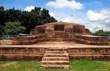

Welcome to comilla
Comilla (Bengali: কুমিল্লা) is a city in eastern Bangladesh, located along the Dhaka-Chittagong Highway. It is the administrative centre of the Comilla District, part of the Chittagong Division. Comilla is the second-largest city of eastern Bangladesh after Chittagong and is one of the three oldest cities in Bangladesh.
Other places in shylet
-  Lalmai pahar is situated in comilla and is one of the example of ancient age
- Shalban bihar situated in comilla is another example of ancient age
- Salban bihar was created during the reign of Gautam Buddha.
Nijhum deep
It is situated in Noakhali District in Bangladesh. Once it was called Char Osmani,Baluar Char, Golden Island [2] A cluster of islands (mainly, Ballar Char, Kamlar Char, Char Osman and Char Muri) emerged in the early 1950s as an alluvium in the shallow estuary of the Bay of Bengal on the south of Noakhali. These new sandbanks first drew the notice of a group of fishermen, who named it Baular Char (literally, the alluvium of sand) later transformed into Ballar Char. Occupying an area of 14,050 acres (5,686 hectares), the island is situated between 21 0 1 / to 22 0 6 /North latitude and 90 0 3 / to 91 0 4 / East longitude